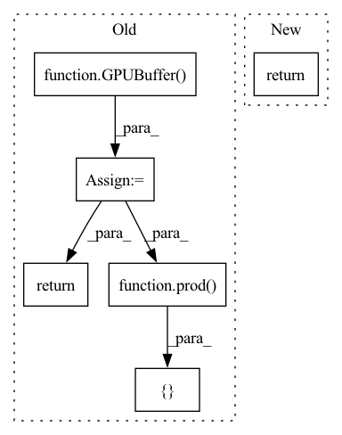

Pattern ID :22864
Before Change
}
def unary_op(op, x):
ret = GPUBuffer( x.shape)
unop = clbuild("unop",
__kernel void unop(__global const float4 *a_g, __global float4 *res_g) {
int gid = get_global_id(0);
float4 A = a_g[gid];
res_g[gid] = convert_float4(+code_for_op[op]+);
})
unop([ roundup(prod( ret.shape) )//4return ret
def binary_op(op, x, y):
ret = GPUBuffer(x.shape)After Change
ewop([prod(ret.shape)], None, ret.cl, *[buf.cl for _, buf in bufs])
return ret
def unary_op(op, x): return elementwise_op([("A", x)], code_for_op[op])
def binary_op(op, x, y): return elementwise_op([("A", x), ("B", y)], code_for_op[op])
def contiguous(x:GPUBuffer): return x if x.st.contiguous else unary_op(UnaryOps.NOOP, x)
In pattern: SUPERPATTERN
Frequency: 3
Non-data size: 6
Instances Fragment ID: 72680759
Project Name: geohot/tinygrad
Commit Name: d05e7c291ad428ba3584a1529e6d71c264c5b7b9
Time: 2022-06-19
Author: 72895+geohot@users.noreply.github.com
File Name: tinygrad/llops/ops_gpu.py
M Class Name: AnonimousClass
N Class Name: AnonimousClass
M Method Name: unary_op(2)
N Method Name: unary_op(2)
M Parent Class:
N Parent Class:
M File Name: tinygrad/llops/ops_gpu.py
N File Name: tinygrad/llops/ops_gpu.py
M Start Line: 67
M End Line: 75
N Start Line: 82
N End Line: 82
Before Change
return ret
def binary_op(op, x, y):
ret = GPUBuffer( x.shape)
assert x.shape == ret.shape and y.shape == ret.shape
binop = clbuild("binop",
__kernel void binop(__global const float4 *a_g, __global const float4 *b_g, __global float4 *res_g) {
int gid = get_global_id(0);
float4 A = a_g[gid];
float4 B = b_g[gid];
res_g[gid] = convert_float4(+code_for_op[op]+);
})
binop([ roundup(prod( ret.shape) )//4return ret
def reduce_op(op, inp, new_shape):
ret = GPUBuffer(new_shape)After Change
return ret
def unary_op(op, x): return elementwise_op([("A", x)], code_for_op[op])
def binary_op(op, x, y): return elementwise_op([("A", x), ("B", y)], code_for_op[op])
def contiguous(x:GPUBuffer): return x if x.st.contiguous else unary_op(UnaryOps.NOOP, x)
def reduce_op(op, inp, new_shape): Fragment ID: 72680758
Project Name: geohot/tinygrad
Commit Name: d05e7c291ad428ba3584a1529e6d71c264c5b7b9
Time: 2022-06-19
Author: 72895+geohot@users.noreply.github.com
File Name: tinygrad/llops/ops_gpu.py
M Class Name: AnonimousClass
N Class Name: AnonimousClass
M Method Name: binary_op(3)
N Method Name: binary_op(3)
M Parent Class:
N Parent Class:
M File Name: tinygrad/llops/ops_gpu.py
N File Name: tinygrad/llops/ops_gpu.py
M Start Line: 78
M End Line: 88
N Start Line: 83
N End Line: 83
Before Change
return ret
def contiguous(x, ret=None):
if ret is None: ret = GPUBuffer( x.st.shape)
clbuild("contiguous", __kernel void contiguous(__global const float *x, __global float *ret) {
int gid = get_global_id(0); int valid = 1; int idx = gid; +x.st.expr().replace("//", "/")+;
ret[gid] = valid ? x[idx] : 0.0; // should never be out-of-bounds accesses
})([ prod( ret.shape) ], None, x.cl, ret.cl)
return ret
def movement_op(op, x, arg=None):
ret = GPUBuffer(x.st, x)After Change
def unary_op(op, x): return elementwise_op([("A", x)], code_for_op[op])
def binary_op(op, x, y): return elementwise_op([("A", x), ("B", y)], code_for_op[op])
def contiguous(x:GPUBuffer): return x if x.st.contiguous else unary_op(UnaryOps.NOOP, x)
def reduce_op(op, inp, new_shape):
ret = GPUBuffer(new_shape) Fragment ID: 72680761
Project Name: geohot/tinygrad
Commit Name: d05e7c291ad428ba3584a1529e6d71c264c5b7b9
Time: 2022-06-19
Author: 72895+geohot@users.noreply.github.com
File Name: tinygrad/llops/ops_gpu.py
M Class Name: AnonimousClass
N Class Name: AnonimousClass
M Method Name: contiguous(1)
N Method Name: contiguous(2)
M Parent Class:
N Parent Class:
M File Name: tinygrad/llops/ops_gpu.py
N File Name: tinygrad/llops/ops_gpu.py
M Start Line: 124
M End Line: 130
N Start Line: 84
N End Line: 84